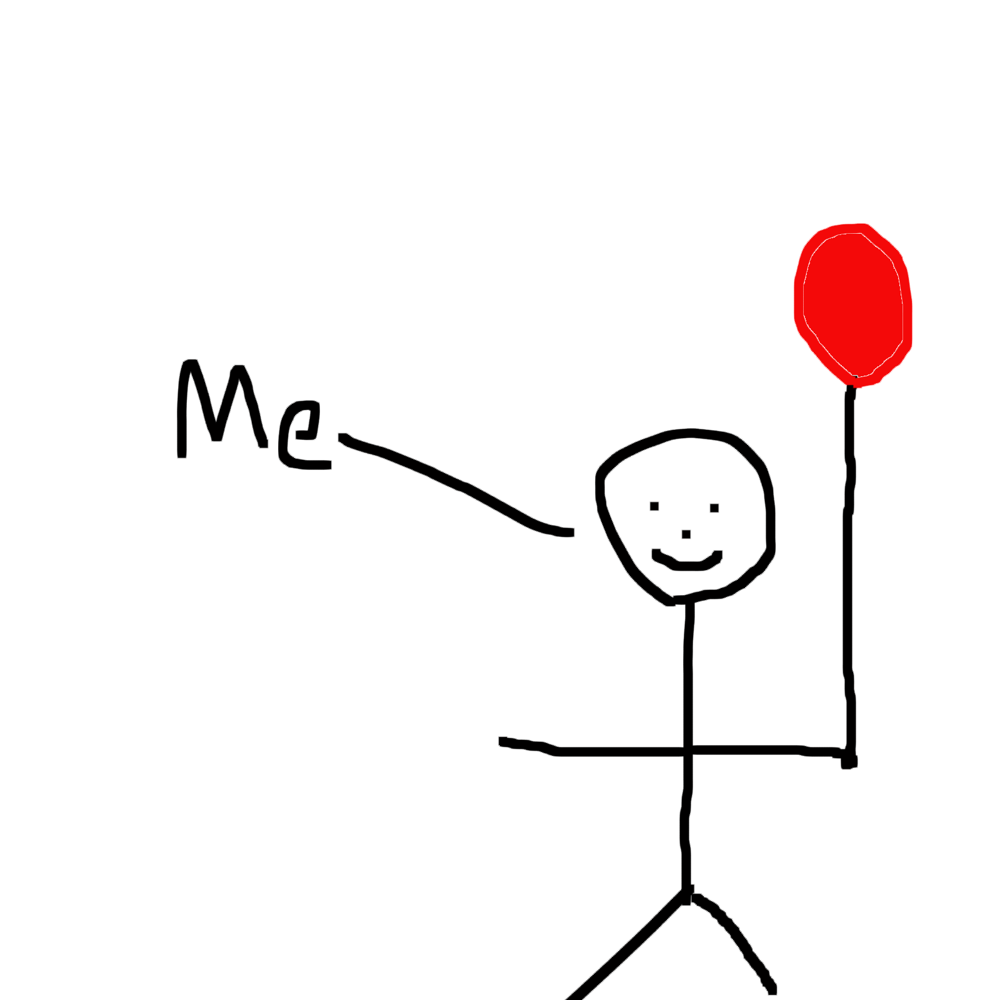

This is where it all begins...

Once upon a time, there was a happy little Jared who wanted to go to school very badly, and he always had that red ballon with him, he had no hair, but he was cute.
Once he was old enough to go to school, he did not even hesitate about leaving his parents to persue his thirst for learning. That morning when the school bus came, he hopped onto the bus excitedly with his red ballon, and began his magical journey.
When he arrived school, he did not see nobody, except for the other students who remained on the bus which he did not care about, because everything just seemed too magical for him.
It was during that lunch break, when the school bully called Steven popped little Jared's balloon...
After the long school day ended, he got back home and decided that he wanted to learning Tai Kuan Do, and he wanted to fight against the bullies.
Not long after, he was fully trained. He fixed his red balloon, and he went back to Steven to show him that he has popped the wrong person's balloon.
Steven was later sent to the hospital for some minor injuries, but for some weird reasons nobody knew, the red balloon remained floating outside of Steven's hospital room.
Little Jared's mother received a call later that day, and it was from the principal about little Jared's poor behavior in school in attempt of beating up another student, which his mother was very angry about it.
He had a taste of his own medicine right after he got home, which it was given by his mother...
Little Jared was later grounded and home schooled by his mother. And about the red balloon and the bully boy Steven, nobody could ever find them again.